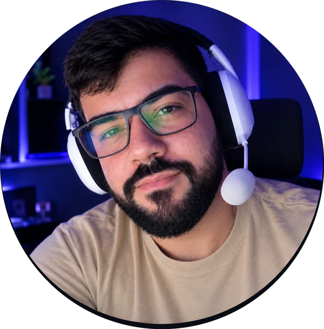

olá, eu sou o
Mário Duarte
Desenvolvedor Front-End júnior. Construo interfaces responsivas e estou migrando para Q.A., porque gosto de saber se o que eu entrego funciona de verdade.

Sobre mim
Sou formado em Análise e Desenvolvimento de Sistemas. Comecei no fim de 2021 e concluí em março de 2023. Desde então estudo e pratico Front-End quase todo dia.
Gosto de tecnologia e de resolver problema. Me comunico bem e rendo tanto sozinho quanto em equipe. Procuro uma vaga de Front-End Júnior ou de Analista de Q.A. Júnior para aprender com gente mais experiente e entregar em projeto real.
De dev para Q.A.
Depois de montar telas, percebi que a parte que mais me prende é garantir que elas funcionem para todo mundo, em qualquer tela e em qualquer situação.
Quem programa sabe onde os bugs costumam se esconder. Quero usar isso para escrever bons casos de teste, relatar problemas com clareza e, mais pra frente, automatizar tudo com JavaScript.
- $os testes abaixo rodam de verdade nesta página. Clique no botão.
Projetos
Skills
No dia a dia
- HTML5tags semânticas, formulários, tabelas e listas
- CSS3Flexbox, Grid, animações e layouts responsivos
- JavaScriptDOM, eventos, arrays, objetos, funções assíncronas e RegExp
- Reactcomponentes, estado, props, hooks e rotas
- Git e GitHubversionamento e trabalho em equipe
Estudando agora
- Fundamentos de Q.A.casos de teste, relato de bugs e testes manuais
- Automação de testeso próximo passo da transição
Vamos conversar?
- e-mailj.mario.d.c@gmail.com
- telefone(85) 9.9902-2591
- instagram@marioduartec